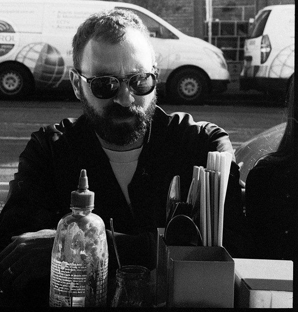

Acid Jacks: Tripping out on the (Kiss My) Grass


The Australia Day long weekend is one of the biggest on the clubbing calendar, so it’s no surprise to hear that Kiss My Grass will return for another massive event on Sunday 25 January, for a day of local talent in true Australian style. In conjunction with Future Entertainment, dance radio station Kiss FM will present Kiss My Grass 2009 with a stunning array of homegrown DJs, producers and live acts from all spectrums of the dance music rainbow. One of these local beauties we can look forward to on Australia day is none other than those enduring kings of the nightclub headf@#k, Melbourne’s own Acid Jacks. Get ready to be tripping out on the grass.
And you can also start getting worried, because apparently the old rules don’t even apply anymore with Acid Jacks. They’ve previously talked to ITM about how shit Sydney DJs are, but the situation has dramatically worsened in the past 12 months. “We have recently upgraded our comment on Sydney DJs, we now consider all DJs shit.” Uh oh… ITM gets psychedelic with Acid jacks ahead of Kiss My Grass…
We’re right in the swing of the summer festival season. How have the gigs been so far?
It’s been confusing (at best). 4 Shows in 4 states in 24 hours = you do the math!
When I last talked to you guys, you were en route to conquering New York. How’s that mission going?
Yeah New York has been great, we’ve been twice this year and it was rocking. We also have a track coming up on NY label Trouble & Bass, who put out our tune Mookie, which will appear on the new Scion A/V compilation!
I see you’ve both being working on your own musical projects separately. Anything in particular you’d like to spruik?
We’ve been doing a lot under our many alias for a while, but only getting the chance to get them out now. There is still a whole gang of Jackmaster, Honeysmack, Metalzone, Jukes of Bangington, Paradise is Now and Full Mental Slackers releases we have to share with the world this year. Also, on Saturday arvo you can get a full tray of 8x beef schniztels for only $8 at The Victoria Market – how cheeeap??
*Tell us about your label Idiot House Records. You seem to have signed up some ‘new’ talent…*
Idiot House has searched high and low to present the finest in idiot music – made by idiots, for idiots! We have some totally idiot sounds from guys like The Depressed Billionaires (from New York), Wongo and Blaze Tripp (from the land of Queensland), The LOL Boys (from Chicago), Nonnewyork (from the Bay Area), DJ Spin Laden & Poligono (from Mexico), Machette, Straaatch, Knuckles and The Phantoms Revenge (all from European destinations) and Darling Farah (from the UAE)!
January 2009 – what sounds are grabbing you? Is it all about “Slamming and Jacking”?
If it sounds crazy and makes the kids go idiot, we will be spinning it
*This Australia Day long weekend, you’re playing at the all-local Kiss My Grass festival. You’ve talked to us before about how shit Sydney DJs are. Is this a chance to show them how it’s done?*
We have recently upgraded our comment on Sydney DJs, we now consider all DJs shit.
*Anyone on the bill you’ll be hurrying off to see?*
The guy who pays us at the end.
Do you have any standout memories of Kiss My Grasses gone by?
We’ve only ever done one Kiss My Grass before (the first one), and I remember that we were sooooo good that they didn’t invite us back until this year.
And finally, do the Acid Jacks have any musical resolutions for the year ahead?
Just keep doing the Bartman.
Catch Acid Jacks making the kids go idiot on Sunday January 25th at Kiss My Grass, at the Sidney Myer Music Bowl in Melbourne.